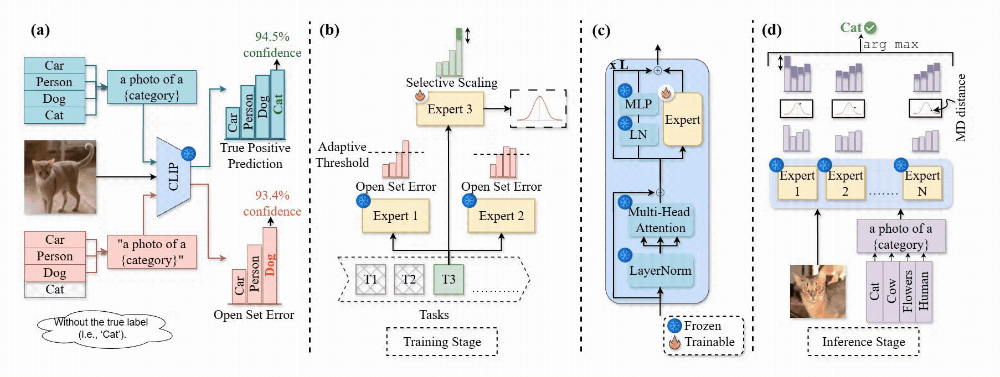

Artificial intelligence (A.I.) systems, like humans, need to learn new tasks over time. However, when learning something new, they often forget previously learned knowledge, a problem known as catastrophic forgetting. One promising solution is the Mixture of Experts (MoE) approach, where several smaller A.I. models (“experts”) work together, and only a few are activated for a given task. Yet, because the same experts continue learning multiple tasks over time, they can still forget earlier knowledge and become overly confident when encountering data that resembles previous tasks, relying too much on shared patterns instead of the most relevant features of the current data.
To address this, we propose an expanding expert framework that continuously adds new experts over time. This avoids retraining old experts or requiring a task identifier, helping prevent forgetting. Yet, experts who learn independently can become overconfident due to limited communication. We introduce confidence-based communication between experts to help them recognize familiar patterns and learn more cautiously. During prediction, experts can rely on their own predictions or defer to more confident experts. We also use a weighting mechanism to identify the best expert for each image. Across several continual learning benchmarks, our approach improves robustness without storing old data, using extra datasets, or requiring a separate expert selector.
Method Overview

Figure 1: (a) CLIP confidently predicts the correct class “cat” when the true label is present, but makes a high-confidence mistake (open-set error) when the “cat” label is absent. (b) training: open-set errors from previous experts filter semantically similar samples (Equation 3), and selective scaling (shown as darker green) calibrates the current expert (Equation 4). The expert also learns a multivariate Gaussian from the vision embeddings (Equation 7). (c) expert architecture as adapters that support residual updates by caching frozen activations, enabling adapter updates without full backbone recomputation in order to enable efficient inference. (d) inference: MD offers sample-specific guidance (darker purple denotes weight) (Equation 8).